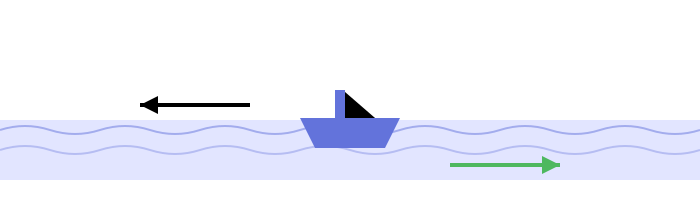

A boat's still-water speed is 10 km/h and stream speed is 2 km/h.
For a 24 km trip, how much more time does upstream travel take than downstream travel?
Q

Boat speed = 10 km/h
Stream speed = 2 km/h
Distance (each way) = 24 km
Upstream (against stream)
Downstream (with stream)
Boat still-water speed = 10 km/h, stream speed = 2 km/h, distance = 24 km each way.
Boat = 10 km/h · Stream = 2 km/h · Distance = 24 km
Given
Boat speed = 10 km/h Stream speed = 2 km/h Distance (each way) = 24 km
Step 1
UpstreamSpeed=BoatSpeed−StreamSpeed =10−2=8 km/h
Step 2
DownstreamSpeed=BoatSpeed+StreamSpeed =10+2=12 km/h
Step 3
Time =DistanceSpeed UpstreamTime=248=3 hours DownstreamTime=2412=2 hours
Step 4
Question asks: Upstream − Downstream time Difference=3−2=1 hour